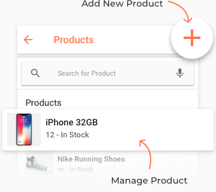
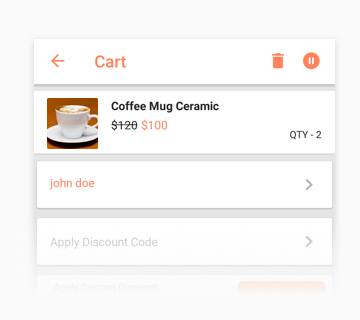

Product
Management

Cashier
Management

Easy Checkout

Mobikul Standalone POS is meant to cater the day to day need of the POS management system. This type of POS doesn’t require any sort of server to extract the data. There is no dependency on the website. The customer can now download the code here from Git Hub and start using the same on their mobile devices.
Compatible With
4.2 and up App Size 5 MB
We Provide Regular Update Of Our Products To Make Them Compatible As Per The Current Requirement.